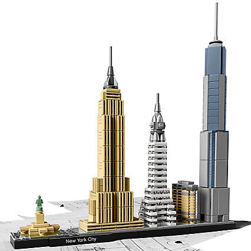

Célébrez New York avec ce modèle LEGO Architecture Skyline ! Aperçu de la construction
Description du produit Fêtez la diversité architecturale de New York avec ce modèle détaillé en briques LEGO. La collection LEGO Architecture Skyline offre des modèles adaptés à l'exposition à la maison et au bureau, et a été développée pour toutes les personnes qui s'intéressent au voyage, à la création, à l'histoire et à l'architecture.
Chaque ensemble a une échelle adaptée pour donner une idée précise de la taille comparative de chaque structure, avec une représentation en couleurs réalistes. Cet ensemble comprend le Flatiron Building, le Chrysler Building, l'Empire State Building, le One World Trade Center et la Statue de la Liberté, et un écriteau décoratif “New York”.
Source : Site officiel LEGO
| Id.Produit | Age | Nbr de pièces | Prix | |
|---|---|---|---|---|
| 21028 | Mini | Maxi | 598 pièces | 49,99$ |
| 12 ans | 99 ans | |||
TP1 : Découverte de HTML et CSS
L2 Développement Web - 2018